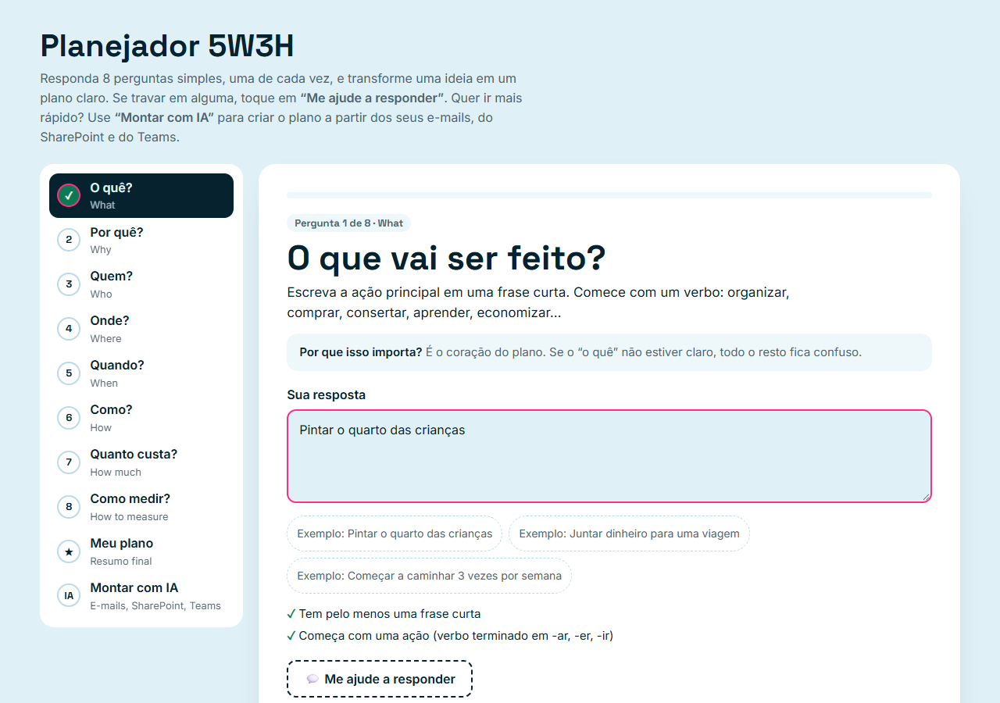
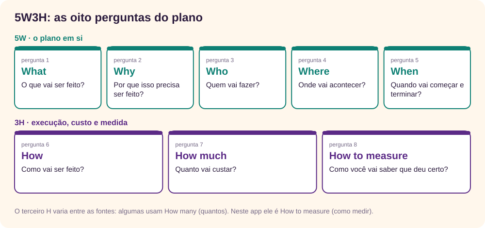
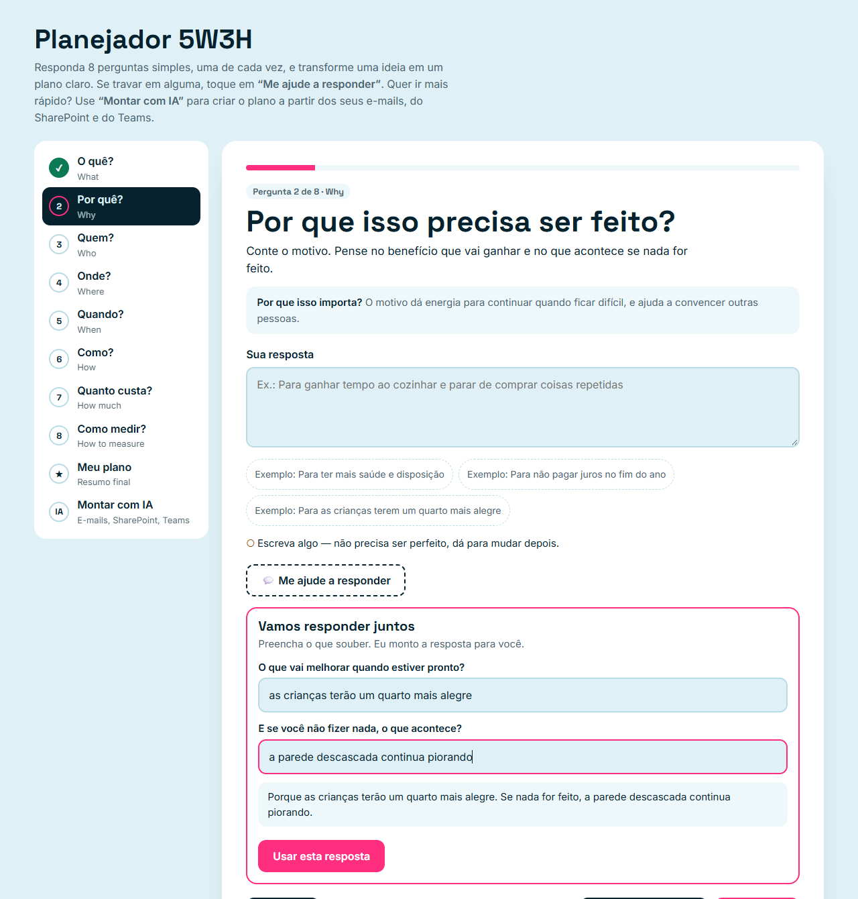
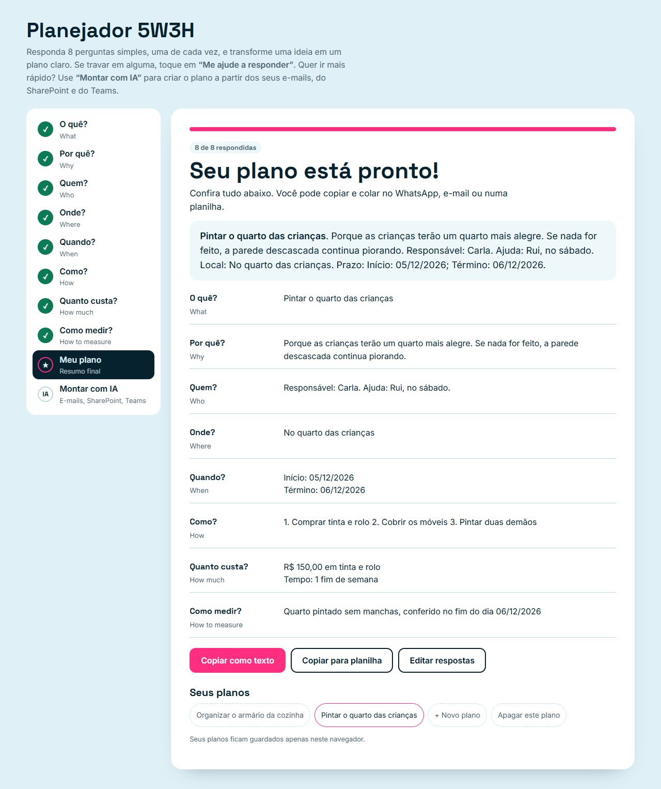
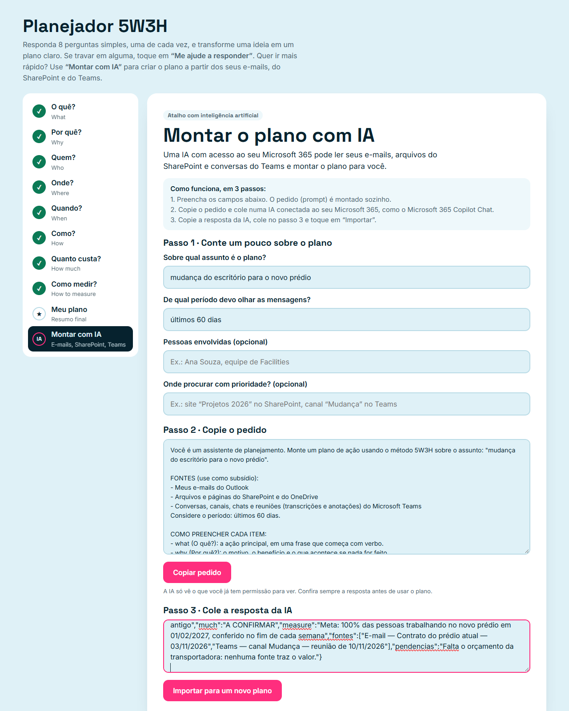
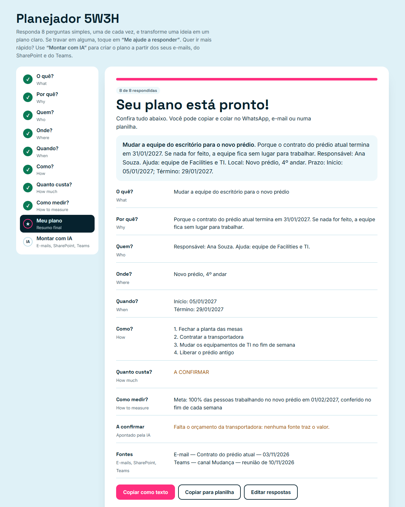

O app
O Planejador 5W3H ajuda a sair de “preciso fazer isso” para um plano com responsável, prazo, passos, custo e meta. Ele faz oito perguntas, uma por tela, explica por que cada uma importa e confere a resposta com dicas simples. No fim, junta tudo num resumo que você copia para um e-mail, uma conversa ou uma planilha. [1]

O método 5W3H
O nome junta as iniciais de oito perguntas em inglês: cinco começam com W (What, Why, Who, Where, When) e três com H (How, How much e uma terceira, que muda conforme a fonte). Responder todas obriga a pensar no que costuma ficar de fora de um plano: quem responde por ele, até quando, quanto custa e como saber se deu certo.
As perguntas são bem mais antigas que o método. A Wikipedia liga a lista à ética de Aristóteles e à retórica, e registra que Rudyard Kipling as popularizou no poema dos “seis criados honestos”, em Just So Stories, de 1902. [2] [3] A forma mais comum em gestão é a 5W2H, que acrescenta How much, o custo. [2] Textos de negócios atribuem a criação da ferramenta à indústria automobilística japonesa, na área de qualidade, mas sem citar uma fonte primária. [4]

O terceiro H não é o mesmo em todo lugar. Há fontes que o leem como How many (quantos). [4] Este app usa How to measure (como medir): a última pergunta pede uma meta em número e quando conferi-la, para que o plano tenha um jeito de dizer se funcionou.
↑ Voltar ao topoAs oito perguntas
Cada tela traz a pergunta, uma orientação, o quadro Por que isso importa?, o campo Sua resposta, três exemplos e uma lista de dicas que o app confere enquanto você digita. A tabela mostra o que cada dica procura no texto.
| Pergunta | O que escrever | O que o app confere |
|---|---|---|
| 1. O quê? (What) | A ação principal, numa frase curta que começa com verbo. | Pelo menos 10 caracteres; a primeira palavra termina em -ar, -er, -ir ou -or. |
| 2. Por quê? (Why) | O benefício e o que acontece se nada for feito. | Pelo menos 10 caracteres; aparece “porque”, “para”, “pois”, “evitar”, “melhorar” ou “se não”. |
| 3. Quem? (Who) | Um responsável principal, com nome, e quem ajuda. | Pelo menos 2 caracteres; não aparece “todos”, “todo mundo”, “a gente” nem “alguém”. |
| 4. Onde? (Where) | Um lugar físico ou online. | Pelo menos 3 caracteres. |
| 5. Quando? (When) | Início e término, ou a frequência. | Um algarismo ou um dia (segunda a domingo, hoje, amanhã); e uma palavra de fim ou de repetição, como “até”, “término”, “prazo”, “semana”, “mês” ou “todo”. |
| 6. Como? (How) | Os passos, em ordem. | Pelo menos 10 caracteres e duas marcas de passo: “1.”, quebra de linha, vírgula, ponto e vírgula, “depois” ou “então”. |
| 7. Quanto custa? (How much) | Dinheiro e tempo. Se não custa nada, “sem custo”. | Um algarismo, “sem custo”, “grátis” ou “nada”; e “hora”, “min”, “dia”, “semana”, “tempo” ou “mês”. |
| 8. Como medir? (How to measure) | Como saber que deu certo: uma meta em número e quando conferir. | Um algarismo; e “todo”, “semana”, “mês”, “dia”, “fim”, “final”, “conferir”, “verificar” ou “anotar”. |
As dicas são regras simples sobre as palavras, lidas no código do app. Elas não entendem o sentido: um ✓ não garante um bom plano, e um ○ não impede de avançar. Próxima → e Pular por enquanto levam à pergunta seguinte do mesmo jeito, e a resposta fica guardada enquanto você digita.
A trilha à esquerda mostra as oito perguntas, Meu plano e Montar com IA. Uma pergunta respondida ganha ✓ na trilha, e a barra no alto do cartão avança. Clique em qualquer item da trilha para ir direto a ele. No celular, a trilha vira uma faixa que rola de lado.
↑ Voltar ao topoAjuda e exemplos
Se travar numa pergunta, clique em 💬 Me ajude a responder. Abre o quadro Vamos responder juntos, com duas a quatro perguntas menores. Enquanto você preenche, a prévia monta a resposta; Usar esta resposta a coloca no campo principal, onde você ainda pode ajustá-la.

- Em Quando?, a ajuda tem campos de data de início e de término e um campo de frequência, e escreve as datas no formato dd/mm/aaaa.
- Em Como?, pede até quatro passos e os numera.
- Em Quanto custa?, pede o valor em reais, com o quê e o tempo. Valor zero vira “Sem custo em dinheiro”.
- Em Como medir?, pede o sinal de sucesso, a meta em número e quando conferir.
Os botões Exemplo: … abaixo do campo colocam um exemplo pronto na resposta, para você adaptar ao seu caso. Tanto o exemplo quanto Usar esta resposta substituem o que estava escrito.
↑ Voltar ao topoRoteiro passo a passo
Este roteiro monta um plano pequeno, do começo ao fim, e passa por todas as funções do app. Leva uns dez minutos.
- Abra o app e, abaixo da pergunta 1, clique em Ver um plano de exemplo preenchido. O resumo mostra “8 de 8 respondidas” e “Seu plano está pronto!”.
- Em Seus planos, no fim do resumo, clique em + Novo plano. O app volta à pergunta 1, vazia.
- Escreva “Pintar o quarto das crianças”. As duas dicas ficam com ✓. Clique em Próxima →.
- Na pergunta 2, clique em 💬 Me ajude a responder. No primeiro campo, escreva “as crianças terão um quarto mais alegre”; no segundo, “a parede descascada continua piorando”. Clique em Usar esta resposta e em Próxima →.
- Na pergunta 3, escreva “Todo mundo ajuda”: a dica Evita respostas vagas fica com ○. Troque por “Responsável: Carla. Ajuda: Rui, no sábado.” e as duas ficam com ✓. Clique em Próxima →.
- Na pergunta 4, clique em Pular por enquanto.
- Na pergunta 5, abra a ajuda, escolha 05/12/2026 como início e 06/12/2026 como término e clique em Usar esta resposta. A resposta fica “Início: 05/12/2026” e “Término: 06/12/2026”, com as duas dicas em ✓. Clique em Próxima →.
- Na pergunta 6, escreva “1. Comprar tinta e rolo 2. Cobrir os móveis 3. Pintar duas demãos” e clique em Próxima →.
- Na pergunta 7, abra a ajuda e preencha 150, “tinta e rolo” e “1 fim de semana”. Clique em Usar esta resposta: aparece “R$ 150,00 em tinta e rolo” e “Tempo: 1 fim de semana”. Clique em Próxima →.
- Na pergunta 8, escreva “Quarto pintado sem manchas, conferido no fim do dia 06/12/2026” e clique em Ver meu plano →.
- O resumo diz “7 de 8 respondidas”, e em Onde? aparece Ainda sem resposta — responder agora. Clique nele, escreva “No quarto das crianças” e clique em Meu plano na trilha. Agora o título é “Seu plano está pronto!”, com um parágrafo que resume o plano.
- Clique em Copiar como texto e cole num e-mail. Depois clique em Copiar para planilha e cole na primeira célula de uma planilha vazia.
- Em Seus planos, clique em “Organizar o armário da cozinha”, depois em Apagar este plano e em Sim, apagar. Sobra só o seu plano.
- Clique em Montar com IA na trilha. Clique em Copiar pedido sem preencher nada: o app pede o assunto primeiro. Escreva “mudança do escritório para o novo prédio” no assunto e “últimos 60 dias” no período; o pedido muda enquanto você digita. Clique em Copiar pedido.
- Sem uma IA à mão, copie a resposta de exemplo, cole no passo 3 da tela e clique em Importar para um novo plano. O app cria um segundo plano, com Quanto custa? e A confirmar em laranja.
- Recarregue a página e clique em Meu plano: os dois planos continuam em Seus planos.
Meu plano
Meu plano mostra as oito respostas lado a lado com o nome da pergunta. Quando as oito estão preenchidas, aparece no topo um parágrafo com o quê, por quê, quem, local e prazo, bom para colar numa mensagem. Pergunta sem resposta vira um botão laranja que leva direto a ela.

| Botão | O que faz |
|---|---|
| Copiar como texto | Copia as oito respostas, cada uma com o nome da pergunta em maiúsculas, e as pendências e fontes, se houver. |
| Copiar para planilha | Copia uma linha de títulos e uma linha de respostas, separadas por tabulação: oito colunas, uma por pergunta. |
| Editar respostas | Volta à pergunta 1. |
| + Novo plano | Cria um plano vazio e vai à pergunta 1. |
| Apagar este plano | Pede confirmação e apaga o plano aberto. Só aparece quando há mais de um plano. |
Em Seus planos, cada plano aparece com o começo da resposta “O quê?”. Clique num deles para abri-lo; o que está aberto tem a borda rosa contínua.
↑ Voltar ao topoMontar com IA
Quando o assunto do plano já está espalhado em e-mails, arquivos e reuniões, o app monta um pedido (prompt) para uma IA ler essas fontes e devolver o plano pronto. O app não fala com nenhuma IA: você copia o pedido, cola na IA e traz a resposta de volta.

- Conte um pouco sobre o plano. Só o assunto é obrigatório. O período, se vazio, vira “últimos 30 dias”. Pessoas e lugares para procurar são opcionais.
- Copie o pedido. Ele lista as fontes (Outlook, SharePoint e OneDrive, Teams), explica cada um dos oito itens e dá cinco regras: usar só o que está nas fontes, escrever “A CONFIRMAR” no que faltar, registrar contradições, usar linguagem simples e listar as fontes. Pede a resposta só em JSON, o formato de dados que o app sabe ler. [8]
- Cole a resposta. O app procura o trecho entre a primeira
{e a última}, então texto antes ou depois não atrapalha, e transforma listas em linhas. Se o plano aberto estiver vazio, a resposta entra nele; senão, vira um plano novo.
O pedido abaixo foi copiado do app no roteiro, com o assunto “mudança do escritório para o novo prédio” e o período “últimos 60 dias”:
Você é um assistente de planejamento. Monte um plano de ação usando o método 5W3H sobre o assunto: "mudança do escritório para o novo prédio".
FONTES (use como subsídio):
- Meus e-mails do Outlook
- Arquivos e páginas do SharePoint e do OneDrive
- Conversas, canais, chats e reuniões (transcrições e anotações) do Microsoft Teams
Considere o período: últimos 60 dias.
COMO PREENCHER CADA ITEM:
- what (O quê?): a ação principal, em uma frase que começa com verbo.
- why (Por quê?): o motivo, o benefício e o que acontece se nada for feito.
- who (Quem?): UM responsável principal com nome, e quem vai ajudar.
- where (Onde?): local físico ou online.
- when (Quando?): data de início e de término (dd/mm/aaaa) ou a frequência.
- how (Como?): passos numerados, em ordem (1., 2., 3.…).
- much (Quanto custa?): valor em R$ e tempo necessário. Se não houver custo, escreva "Sem custo em dinheiro".
- measure (Como medir?): como saber que deu certo, com pelo menos uma meta em número e quando conferir.
REGRAS:
1. Use somente o que estiver nas fontes. Não invente nomes, datas nem valores.
2. Se não encontrar uma informação, escreva "A CONFIRMAR" no item e explique o que falta em "pendencias".
3. Se as fontes se contradizem, use a mais recente e registre o conflito em "pendencias".
4. Escreva em linguagem simples, para quem não conhece o método.
5. Em "fontes", liste cada fonte usada: tipo (e-mail, SharePoint ou Teams), título ou assunto, e data.
Responda APENAS com o JSON abaixo, preenchido, sem nenhum texto antes ou depois:
{"what":"","why":"","who":"","where":"","when":"","how":"","much":"","measure":"","fontes":"","pendencias":""}
E esta é uma resposta de exemplo, inventada para o roteiro, no formato que o pedido exige. Nomes, datas e fontes são fictícios:
{"what":"Mudar a equipe do escritório para o novo prédio","why":"Porque o contrato do prédio atual termina em 31/01/2027. Se nada for feito, a equipe fica sem lugar para trabalhar.","who":"Responsável: Ana Souza. Ajuda: equipe de Facilities e TI.","where":"Novo prédio, 4º andar","when":"Início: 05/01/2027\nTérmino: 29/01/2027","how":"1. Fechar a planta das mesas\n2. Contratar a transportadora\n3. Mudar os equipamentos de TI no fim de semana\n4. Liberar o prédio antigo","much":"A CONFIRMAR","measure":"Meta: 100% das pessoas trabalhando no novo prédio em 01/02/2027, conferido no fim de cada semana","fontes":["E-mail — Contrato do prédio atual — 03/11/2026","Teams — canal Mudança — reunião de 10/11/2026"],"pendencias":"Falta o orçamento da transportadora: nenhuma fonte traz o valor."}

Que IA usar
O app sugere o Microsoft 365 Copilot Chat. Segundo a Microsoft, o Copilot Chat sem a licença do Microsoft 365 Copilot usa principalmente dados da web: ele só usa conteúdo da empresa que você entrega junto com o pedido, como um arquivo anexado. Buscar sozinho em e-mails, arquivos, reuniões e conversas do Teams é recurso da licença Microsoft 365 Copilot, e o acesso respeita as permissões de quem pergunta. [5] Sem a licença, anexe ou cole os e-mails e documentos que importam para o plano.
Confira a resposta antes de usar o plano. O pedido manda a IA não inventar, mas só você sabe se os nomes, datas e valores estão certos. E siga a política da sua empresa sobre o que pode ser enviado a uma IA.↑ Voltar ao topo
Onde ficam os planos
Os planos, a pergunta em que você parou e os campos do atalho com IA ficam no armazenamento local do navegador (localStorage), com a chave plan5w3h.v1. Nada sai do seu computador. Isso tem três consequências: [7]
- Outro navegador, outro perfil ou outro computador não veem os seus planos.
- Numa janela anônima, os planos somem quando a última janela anônima é fechada.
- Limpar os dados do site no navegador apaga os planos.
O app não tem botão para salvar em arquivo. Para guardar uma cópia, use Copiar como texto ou Copiar para planilha. Copiar exige uma página aberta por HTTPS, como a do site; se o navegador recusar, o app avisa, e você pode selecionar o texto e copiar à mão. [6]
↑ Voltar ao topoErros comuns
Clicar num exemplo depois de escrever
O exemplo substitui o que estava no campo. Use os exemplos antes de começar, ou copie o seu texto antes de clicar.
Pôr “todo mundo” como responsável
Quando todos respondem, ninguém responde. Escreva um nome principal e, à parte, quem ajuda.
Tratar as dicas como nota
As dicas procuram palavras, não o sentido. Um ✓ não garante que a resposta está boa; um ○ não impede de seguir.
Esquecer de medir
“Ficar melhor” não dá para conferir. Ponha um número e uma data: “menos de 1 minuto para achar qualquer item, conferido todo domingo”.
Achar que a IA leu os seus e-mails
Sem a licença do Microsoft 365 Copilot, o Copilot Chat não busca sozinho nos e-mails e no Teams. Entregue o conteúdo junto com o pedido e desconfie de uma resposta sem fontes.
Confiar que o plano está na nuvem
Os planos ficam só neste navegador. Trocou de computador ou limpou os dados, eles somem. Copie como texto o que precisa guardar.
Para fixar
- São oito perguntas: cinco W (o quê, por quê, quem, onde, quando) e três H (como, quanto custa, como medir).
- As dicas abaixo da resposta orientam, mas não bloqueiam.
- Ajuda, exemplos e importação substituem a resposta que estava lá.
- O atalho com IA monta o pedido; a IA lê as fontes; você confere.
- Os planos ficam no navegador: copie o que quiser guardar.
Idioma da interface
A interface do app está em português. A tabela traz os botões e rótulos principais nos quatro idiomas deste tutorial. O pedido para a IA também é gerado em português.
| No app | English | Italiano | Español |
|---|---|---|---|
| O quê? · Por quê? · Quem? · Onde? · Quando? | What? · Why? · Who? · Where? · When? | Che cosa? · Perché? · Chi? · Dove? · Quando? | ¿Qué? · ¿Por qué? · ¿Quién? · ¿Dónde? · ¿Cuándo? |
| Como? · Quanto custa? · Como medir? | How? · How much? · How to measure? | Come? · Quanto costa? · Come misurare? | ¿Cómo? · ¿Cuánto cuesta? · ¿Cómo medir? |
| Pergunta 1 de 8 · Sua resposta · Por que isso importa? | Question 1 of 8 · Your answer · Why does it matter? | Domanda 1 di 8 · La tua risposta · Perché è importante? | Pregunta 1 de 8 · Tu respuesta · ¿Por qué importa? |
| Exemplo: … | Example: … | Esempio: … | Ejemplo: … |
| ← Voltar · Pular por enquanto · Próxima → | ← Back · Skip for now · Next → | ← Indietro · Salta per ora · Avanti → | ← Volver · Saltar por ahora · Siguiente → |
| 💬 Me ajude a responder · Vamos responder juntos · Usar esta resposta | 💬 Help me answer · Let's answer together · Use this answer | 💬 Aiutami a rispondere · Rispondiamo insieme · Usa questa risposta | 💬 Ayúdame a responder · Respondamos juntos · Usar esta respuesta |
| Ver um plano de exemplo preenchido · Montar automaticamente com IA | See a filled-in sample plan · Build automatically with AI | Vedi un piano di esempio compilato · Costruisci automaticamente con l'IA | Ver un plan de ejemplo completo · Armar automáticamente con IA |
| Meu plano · Resumo final · Ver meu plano → | My plan · Final summary · See my plan → | Il mio piano · Riepilogo finale · Vedi il mio piano → | Mi plan · Resumen final · Ver mi plan → |
| Seu plano está pronto! · Seu plano até agora · 8 de 8 respondidas | Your plan is ready! · Your plan so far · 8 of 8 answered | Il tuo piano è pronto! · Il tuo piano finora · 8 di 8 con risposta | ¡Tu plan está listo! · Tu plan hasta ahora · 8 de 8 respondidas |
| Ainda sem resposta — responder agora | No answer yet — answer now | Ancora senza risposta — rispondi ora | Todavía sin respuesta — responder ahora |
| Copiar como texto · Copiar para planilha · Editar respostas | Copy as text · Copy for spreadsheet · Edit answers | Copia come testo · Copia per foglio di calcolo · Modifica risposte | Copiar como texto · Copiar para planilla · Editar respuestas |
| Seus planos · + Novo plano · Plano sem nome | Your plans · + New plan · Untitled plan | I tuoi piani · + Nuovo piano · Piano senza nome | Tus planes · + Nuevo plan · Plan sin nombre |
| Apagar este plano · Sim, apagar · Não | Delete this plan · Yes, delete · No | Elimina questo piano · Sì, elimina · No | Borrar este plan · Sí, borrar · No |
| Montar com IA · Montar o plano com IA · E-mails, SharePoint, Teams | Build with AI · Build the plan with AI · Emails, SharePoint, Teams | Costruire con l'IA · Costruire il piano con l'IA · E-mail, SharePoint, Teams | Armar con IA · Armar el plan con IA · Correos, SharePoint, Teams |
| Sobre qual assunto é o plano? · De qual período devo olhar as mensagens? | What subject is the plan about? · Which period should I look at? | Su quale argomento è il piano? · Di quale periodo devo guardare i messaggi? | ¿Sobre qué tema es el plan? · ¿De qué período miro los mensajes? |
| Pessoas envolvidas · Onde procurar com prioridade? | People involved · Where to search first? | Persone coinvolte · Dove cercare per primo? | Personas involucradas · ¿Dónde buscar primero? |
| Copiar pedido · Importar para um novo plano | Copy request · Import into a new plan | Copia richiesta · Importa in un nuovo piano | Copiar pedido · Importar a un nuevo plan |
| A confirmar · Apontado pela IA · Fontes | To be confirmed · Flagged by the AI · Sources | Da confermare · Segnalato dall'IA · Fonti | A confirmar · Señalado por la IA · Fuentes |
Revisão rápida
Tente responder antes de abrir cada pergunta.
1. O que significam os 5 W e os 3 H neste app?
What, Why, Who, Where e When (o quê, por quê, quem, onde, quando) e How, How much e How to measure (como, quanto custa, como medir).
2. Uma dica ficou com ○. Você pode avançar?
Pode. As dicas só orientam; Próxima e Pular por enquanto funcionam sempre, e você pode voltar depois.
3. Você escreveu uma resposta e clicou num exemplo. O que aconteceu com o seu texto?
Foi substituído pelo exemplo. O mesmo acontece com Usar esta resposta, na ajuda.
4. Por que a última pergunta pede um número?
Porque sem uma meta que dá para contar ou ver não há como saber se o plano funcionou ou se é preciso mudar algo.
5. O plano importado da IA tem “A CONFIRMAR” em Quanto custa?. O que fazer?
Ver em A confirmar o que faltou, buscar a informação e editar a resposta. O app conta o item como respondido, mas o mostra em laranja.
6. Você abriu o app em outro computador e os planos sumiram. Por quê?
Porque ficam no armazenamento local do navegador onde foram criados. Para levá-los, copie como texto ou para planilha.
Referências
- Giovani Perotto Mesquita, “Planejador 5W3H”, app em um único arquivo HTML, giovanipm.github.io/planejador-5w3h.html.
- Wikipedia (em português), “5W” (o endereço 5W2H leva a este verbete), editado pela última vez em 12/03/2025, acesso em 26/11/2026, pt.wikipedia.org/wiki/5W. Cita as variantes 5W1H e 5W2H, com How much (quanto) como pergunta adicional, e liga a origem das perguntas à ética e à retórica. Não cita a 5W3H nem uma origem japonesa.
- Wikipedia (em inglês), “Five Ws”, acesso em 26/11/2026, en.wikipedia.org/wiki/Five_Ws. Aponta a Ética a Nicômaco, de Aristóteles, como fonte da lista, antes atribuída a Hermágoras de Temnos, e o poema de Kipling em Just So Stories (1902).
- Equipe Mais Retorno, “5W3H: saiba o que é e como funciona”, publicado em 13/10/2020, acesso em 26/11/2026, maisretorno.com/blog/termos/5/5w3h. Lista How many (quantos) entre as perguntas e diz que a ferramenta foi criada no Japão, na indústria automobilística, para a área de qualidade, sem indicar fonte. Diverge do app, que usa How to measure, e da Wikipedia [2], que não registra essa origem.
- Microsoft Learn, “What is Microsoft Copilot?”, atualizado em 17/11/2026, acesso em 26/11/2026, learn.microsoft.com/en-us/copilot/overview. O Copilot Chat sem licença usa principalmente dados da web e só usa conteúdo da organização entregue com o pedido; a licença Microsoft 365 Copilot busca em e-mails, arquivos, reuniões e Teams pelo Microsoft Graph, com acesso limitado às permissões do usuário.
- MDN Web Docs, “Clipboard: writeText() method”, modificado em 30/11/2025, acesso em 26/11/2026, developer.mozilla.org/en-US/docs/Web/API/Clipboard/writeText. Escrever na área de transferência só funciona em contexto seguro (HTTPS).
- MDN Web Docs, “Window: localStorage property”, acesso em 21/11/2026, developer.mozilla.org/en-US/docs/Web/API/Window/localStorage. Em janelas anônimas, os dados são apagados quando a última aba anônima é fechada.
- T. Bray (ed.), “The JavaScript Object Notation (JSON) Data Interchange Format”, RFC 8259, IETF, dezembro de 2017, datatracker.ietf.org/doc/html/rfc8259.

![Question 2 of 8, Por que isso precisa ser feito? (Why does it need to be done?), with the Vamos responder juntos (Let's answer together) box open: the field What will improve when it is done?, filled with the children will have a happier room, and the field And if you do nothing, what happens?, filled with the peeling wall keeps getting worse; below, the preview Because the children will have a happier room. If nothing is done, the peeling wall keeps getting worse, and the Usar esta resposta (Use this answer) button](rc_images/Planejador5W3HAjuda.png)